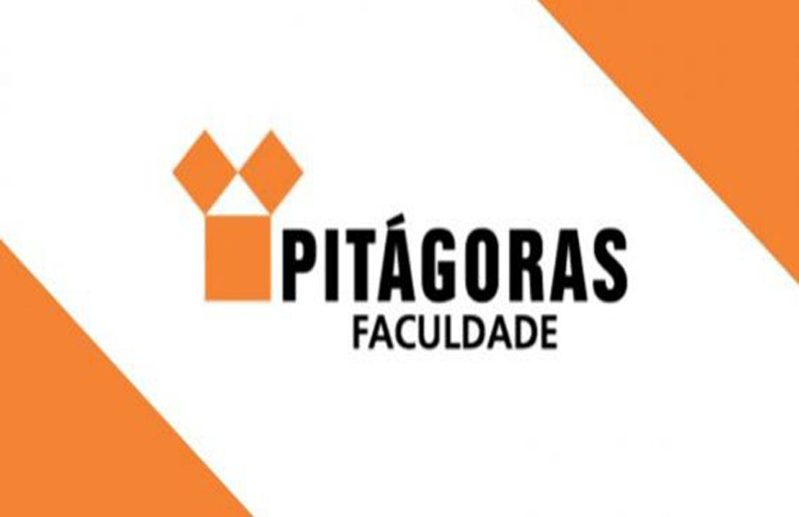

Informações

Projeto
Axou - Achados & Perdidos
O objetivo do sistema é ajudar uma pessoa que perdeu um objeto, pessoa ou animal a
encontrar, conectando a pessoa que encontrou à pessoa que perdeu.
* Esta versão é uma demonstração e apresentação da ideia
Integrantes
William Resende
Lucas Alvez
Fernando Pereira
Ivan Kaiser
Karolina Avila
Sandra Pereira